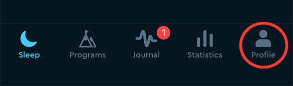
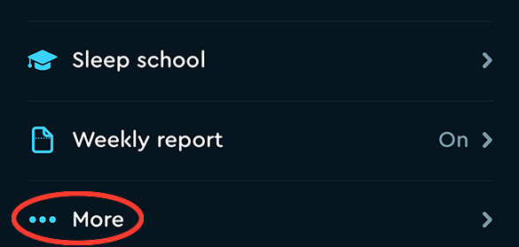
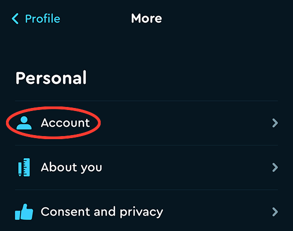
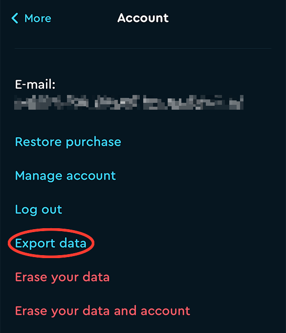
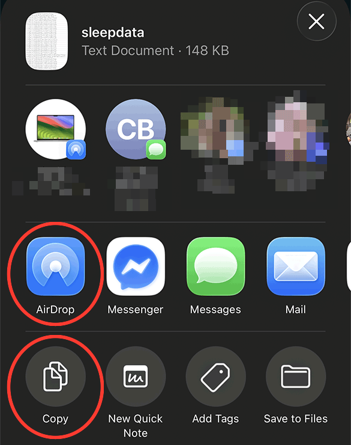

Exporting from Sleep Cycle
The export is five taps deep, in a menu nobody finds by accident. Here is the path, with a picture of each screen.
About a minute. The red ring on each picture is the thing to tap.
-
Open Sleep Cycle and tap Profile
It is the last tab in the row along the bottom, on the right.

-
Scroll to the bottom and tap “••• More”
Profile opens on your totals — nights recorded, average time, backup. Keep scrolling past the Settings list. “More” is the last row, under Weekly report.

-
Tap Account
First row on the More screen, under the heading Personal.

-
Tap Export data
Fourth in the list of blue links, under Log out.
Read the row before you tap it. The two rows underneath are red and they erase your sleep history. Export data is the last of the blue ones.

-
Send yourself the file
Sleep Cycle builds the file — sleepdata.csv, a plain text file, a couple of hundred kilobytes — and hands it to the usual iOS share sheet. Two of those options are the ones you want:
- AirDrop, if you are going to finish on a Mac. The file lands in Downloads. This is the one to pick: the last step of all this happens in Google Sheets, which wants a computer.
- Copy, which puts the contents of the file on your clipboard. Paste it straight into the box on the tool. If your Mac and your phone are signed in to the same Apple account, a copy on the phone can be pasted on the Mac.

That is the file
Drop it into the box on the tool, or paste the text in. The rows come back formatted for the chart template, and nothing about the file leaves your own device.